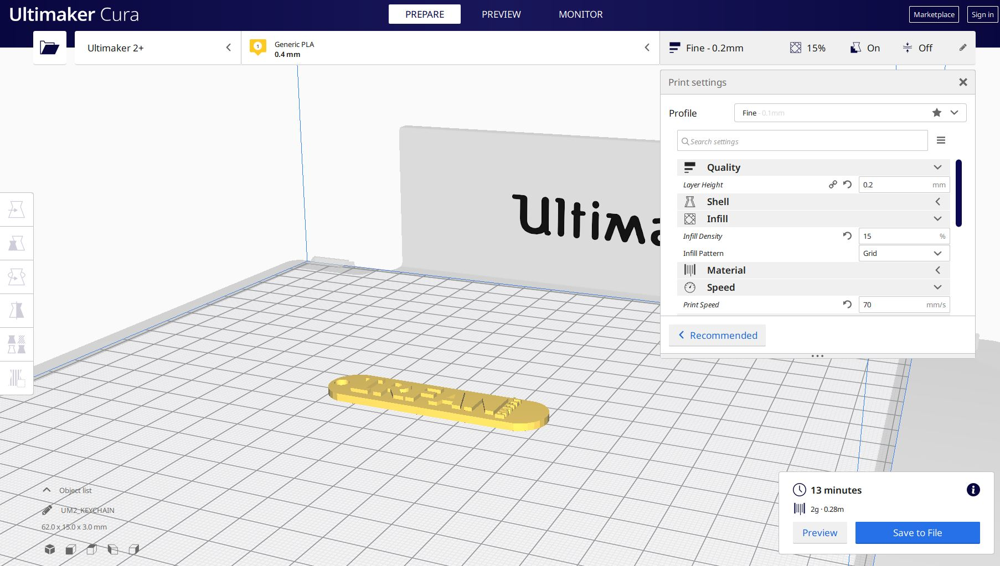
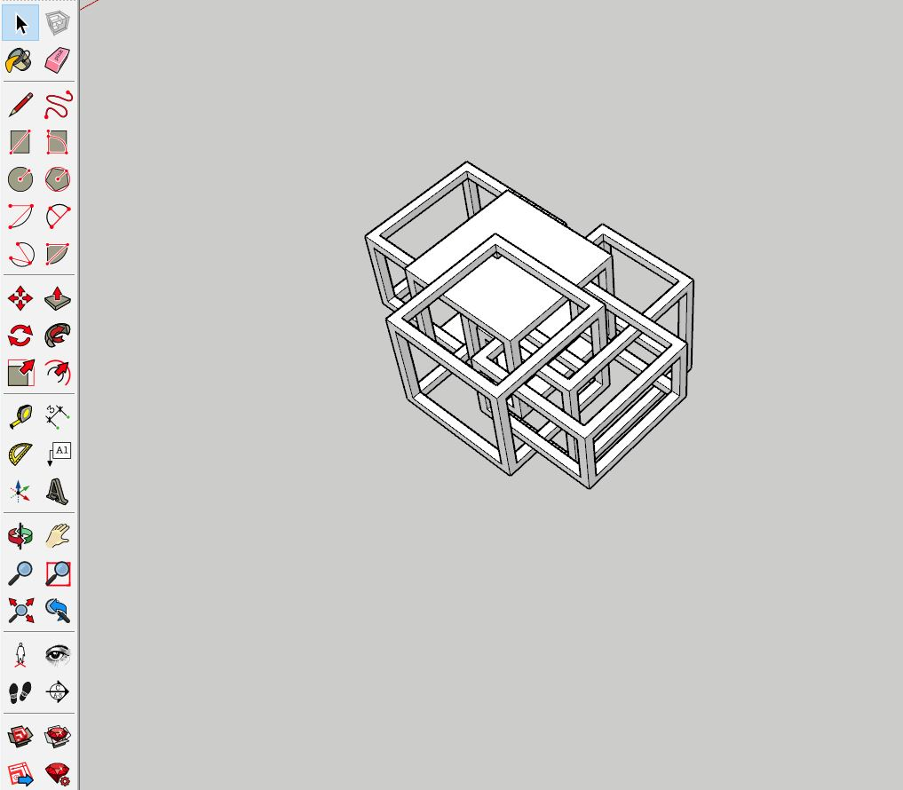
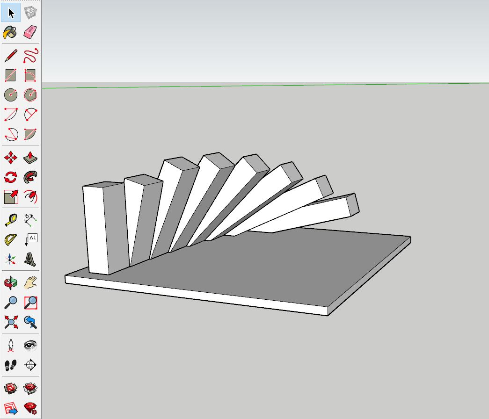
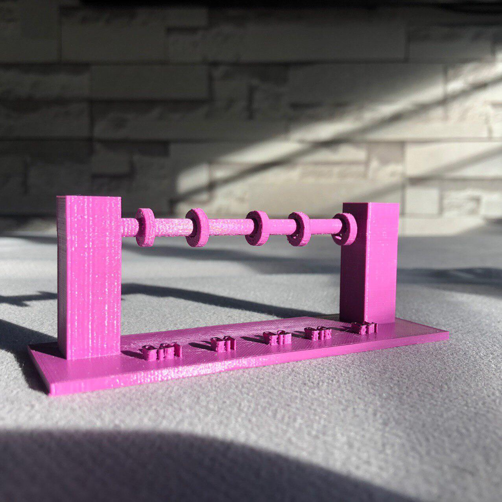
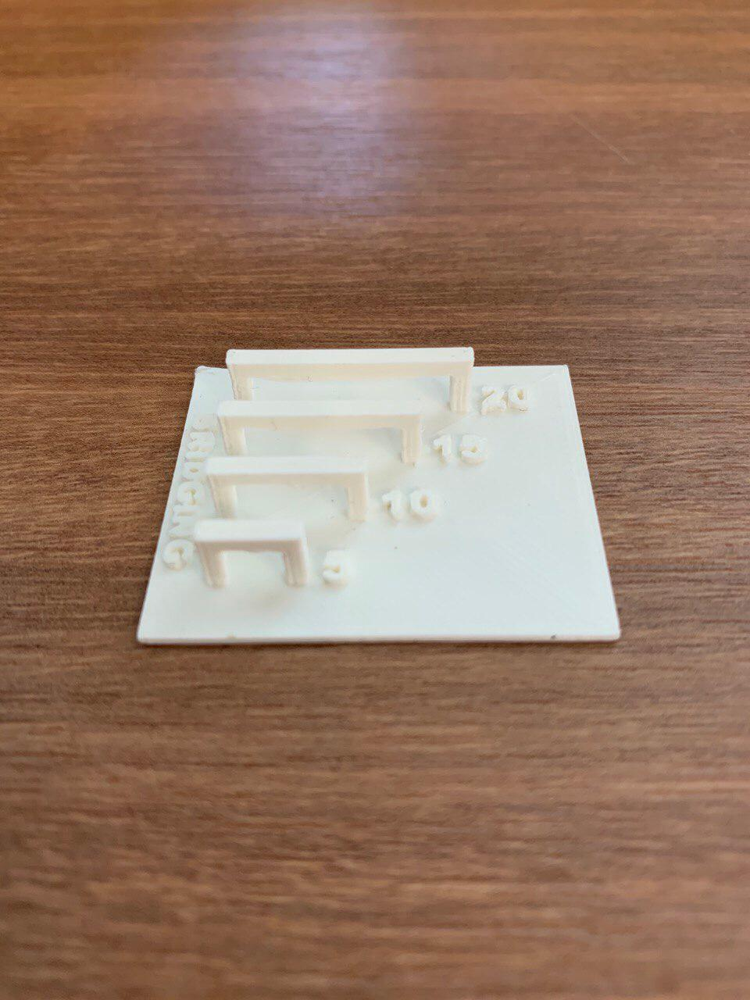

3D Printing
For every 3d printing item I made, I designed everything through sketchup and then export it into Ultimaker Cura to then finally 3d printing my product
For our first 3d printing assignment, we were told to design a keychain with our name on it as a practice.

This is my final product of the keychain from sketch up to an actual 3d printed one


For this assignment, I've decided to create something that looks like an illusion. This looks like a box frame in another box frame and in another box frame


In a group, each of us were told to do either overhang, bridging, clearance or infill density. For me I chose to do overhang


Terry did clearance

Hafiza did bridging

Lin Zhao did Infill density